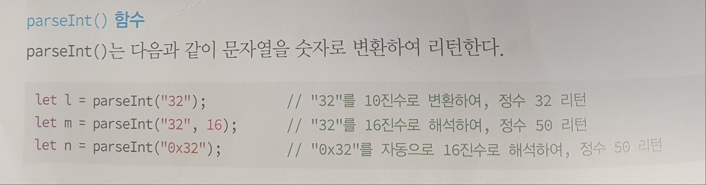
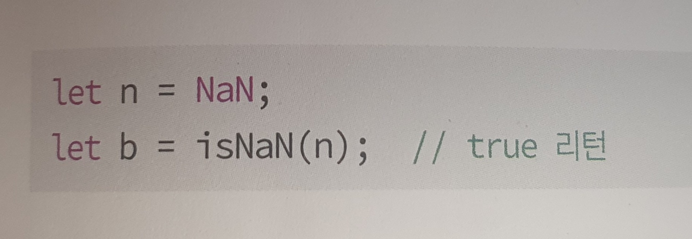
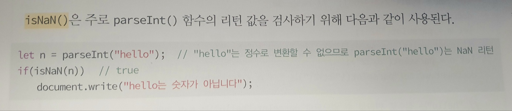
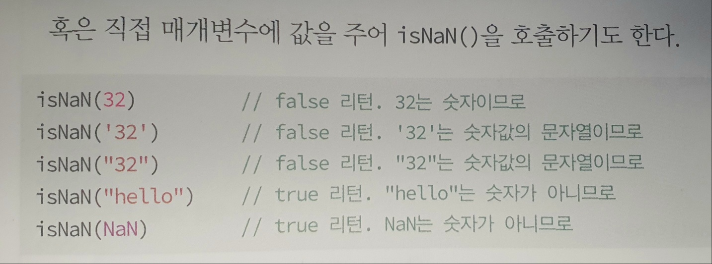

JS의 전역함수
evar() 함수
수식이나 JS문장을 문자열 형태로 전달받아 실행한 후 결과를 리턴한다.
let res = eval("2*3+4*6"); ----- // res는 30
parseInt() 함수
문자열을 숫자로 변환하여 리턴한다.

isNaN() 함수와 parseInt() 함수
false가 거짓 값을 나타내는 리터럴 키워드인 것과 같이 NaN은 숫자가 아님을 나타내는 리터럴 키워드이다.
isNaN()은 변수의 값이 NaN인지 비교하여 맞으면 true를 리턴하는 함수이다.

- 변수 n 에 숫자가 아니라는 NaN 키워드를 대입
- isNaN() 숫자가 아니면 true는 리턴함
isNaN() 함수는 주로 문자를 숫자로 변환하여 리턴하는 parseInt() 함수의 리턴값을 검사하기 위해 다음과 같이 사용된다.

직접 매개변수에 값을 주어 isNaN()을 호출하기도 한다.

JS에서 제공하는 전역 함수
- eval( exp ) - exp의 JS식(수식)을 계산하고 결과 리턴
- parseInt( str ) - str 문자열을 정수로 변환하여 리턴
- parseInt( str, radix ) - str 문자열을 radix 진수로 해석하고 정수로 변환하여 리턴
- parseFloat( str ) - str 문자열을 실수로 변환하여 리턴
- isFinite( value ) - value가 숫자면 true 리턴
- isNaN( value ) - value가 숫자가 아니면 true 리턴